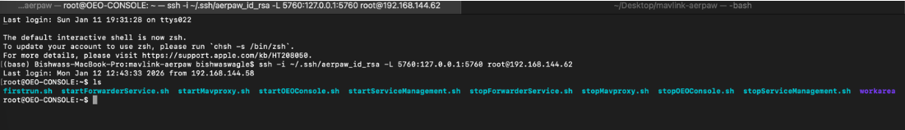
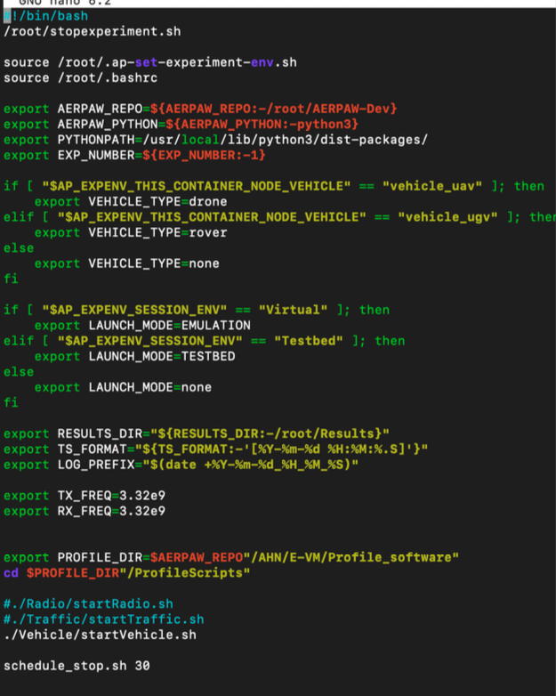
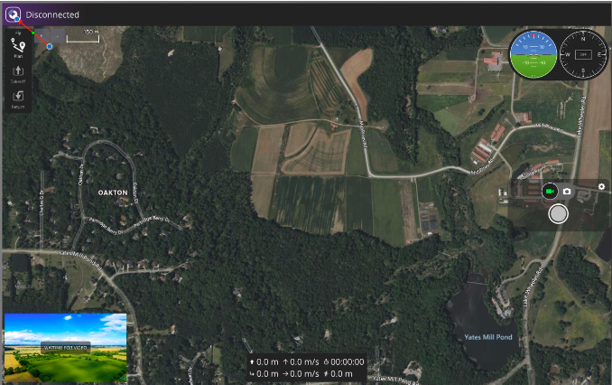
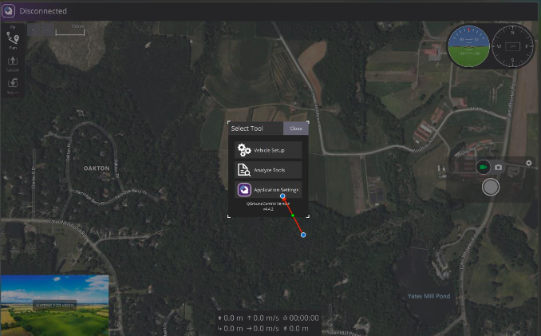
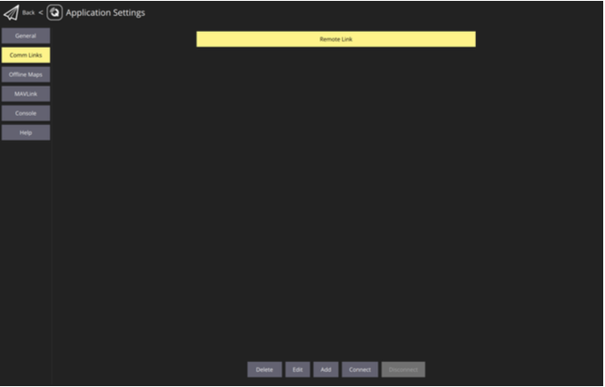
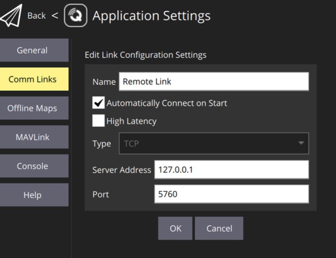
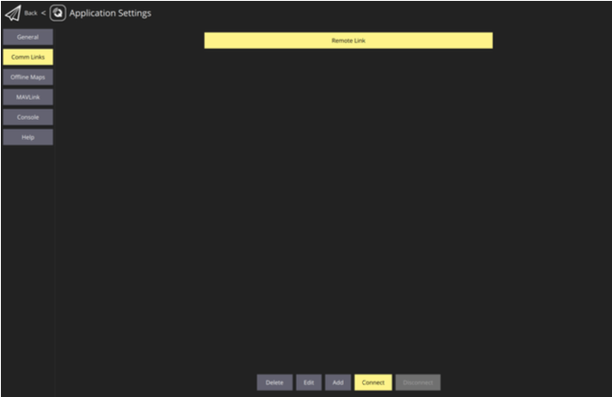

In this chapter, you will set up the AERPAW testbed environment required for the path spoofing experiment. This includes configuring the OEO Console for remote drone control, setting up experiment scripts on both the drone and base station nodes, and establishing a connection with QGroundControl for mission monitoring and execution.
The AERPAW (Aerial Experimentation and Research Platform for Advanced Wireless) testbed provides a realistic environment for testing UAV security mechanisms. Proper configuration of this environment is essential for conducting reproducible experiments and observing the effects of both attack and defense strategies.
By completing this chapter, you will have a fully configured experimental environment ready for implementing cryptographic defenses against path spoofing attacks.
Before starting this chapter, ensure that:
This chapter assumes that basic AERPAW user registration and resource allocation have already been completed.
The OEO (Operator Experiment Operations) Console provides remote access to control the drone during experiments. It acts as a bridge between your local machine and the drone's autopilot system.
Open a terminal on your local machine and establish an SSH tunnel with port forwarding:
ssh -i ~/.ssh/aerpaw_id_rsa -L 5760:127.0.0.1:5760 root@192.168.144.62

Parameter explanation:
-i ~/.ssh/aerpaw_id_rsa: Specifies the SSH private key for authentication-L 5760:127.0.0.1:5760: Creates a local port forward from your machine's port 5760 to the remote port 5760root@192.168.144.62: Connects to the OEO Console as root userThis tunnel allows QGroundControl on your local machine to communicate with the drone's autopilot through the forwarded port.
Once connected, you should see the OEO Console prompt. Verify connectivity by checking the date:
date
Keep this terminal window open throughout the experiment - closing it will terminate the SSH tunnel and disconnect QGroundControl from the drone.
AERPAW experiments require configuration scripts on both the drone and base station nodes. These scripts control the behavior of each node during the experiment.
Open a new terminal and SSH into the drone node:
ssh -i ~/.ssh/aerpaw_id_rsa root@192.168.144.5
The drone node IP address is typically 192.168.144.5 in AERPAW experiments.
The drone requires a vehicle startup script that initializes the autopilot system. Copy the sample UAV data mule script:
cp /root/Profiles/ProfileScripts/Vehicle/Samples/startUAVdataMule.sh \
/root/Profiles/ProfileScripts/Vehicle/startVehicle.sh
This script will be automatically executed when the experiment starts.
Edit the main experiment startup script to enable the vehicle script:
nano /root/start_experiment.sh
Locate the line containing ./startVehicle.sh and ensure it is uncommented (remove the # if present):
# Uncomment this line:
./Profiles/ProfileScripts/Vehicle/startVehicle.sh

Save the file and exit the editor (Ctrl+X, then Y, then Enter).
If your experiment requires base station configuration, SSH into the base station:
ssh -i ~/.ssh/aerpaw_id_rsa root@192.168.144.1
For this experiment, the base station configuration is minimal, as most operations will be performed from the OEO Console and through Python scripts.
QGroundControl (QGC) is the ground control station software used to monitor and control the drone during flight.
Open QGroundControl on your local machine. The application should start and display a map view.

Click on the Q icon in the top-left corner to access the application menu, then select Application Settings.

Navigate to Comm Links in the left sidebar.

Click the Add button to create a new communication link with the following settings:

Click OK to save the configuration.
Select the newly created link from the list and click the Connect button.
If the SSH tunnel is properly established and the drone is powered on, QGroundControl should connect successfully. You will see the drone appear on the map at its current location, and telemetry data will begin streaming in the interface.

Check the top toolbar in QGroundControl:
The experimental setup uses the following network architecture:
Your Computer (Local Machine)
↓ (SSH Tunnel - Port 5760)
OEO Console (192.168.144.62)
↓ (MAVLink Communication)
Drone Autopilot (192.168.144.5)
↓ (Command Execution)
Drone Flight Controller
Base station and adversary nodes can inject commands directly to the drone at 192.168.144.5 on UDP port 14551, which is why encryption is necessary to prevent unauthorized command injection.
Before proceeding to the next chapter, ensure the following:
On the drone node, verify that the experiment directory structure is in place:
ls -la /root/Profiles/AADMChallenge/PortableNode/
You should see the experiment scripts directory. In the next chapter, we will add the flight mission script to this location.
Symptoms: QGC shows "Waiting for Vehicle" or "Disconnected"
Solutions:
Symptoms: "Connection refused" or "Host unreachable"
Solutions:
chmod 600 ~/.ssh/aerpaw_id_rsaSymptoms: Error messages about missing scripts during experiment start
Solutions:
ls -l /root/Profiles/ProfileScripts/Vehicle/startVehicle.shAs a result of completing this chapter, you have successfully configured the AERPAW testbed environment for conducting the path spoofing experiment. You established remote access to the drone through the OEO Console, configured the necessary startup scripts, and connected QGroundControl for mission monitoring. Your environment is now ready for the next phase: implementing FIPS-compliant cryptography to secure MAVLink communications against path spoofing attacks.